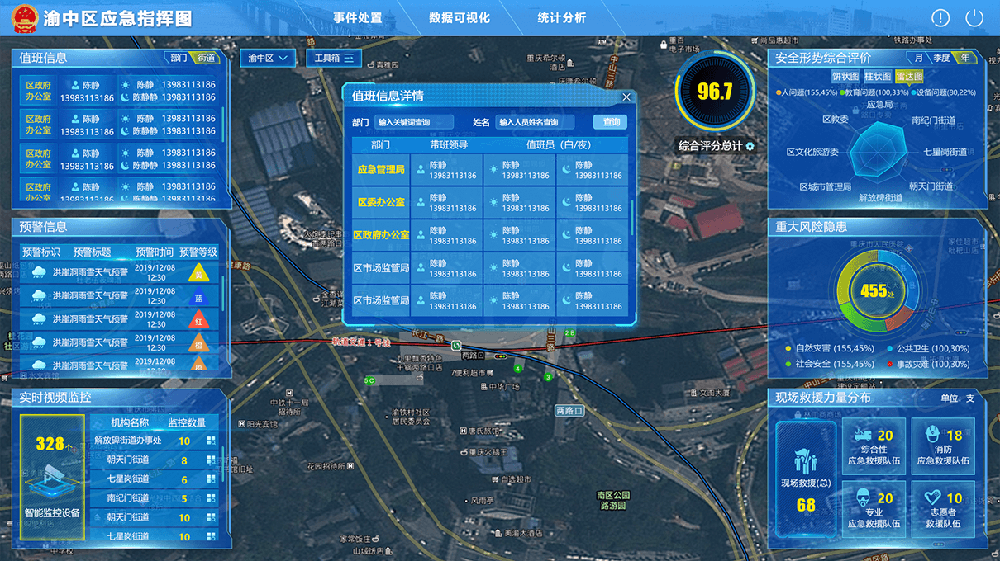
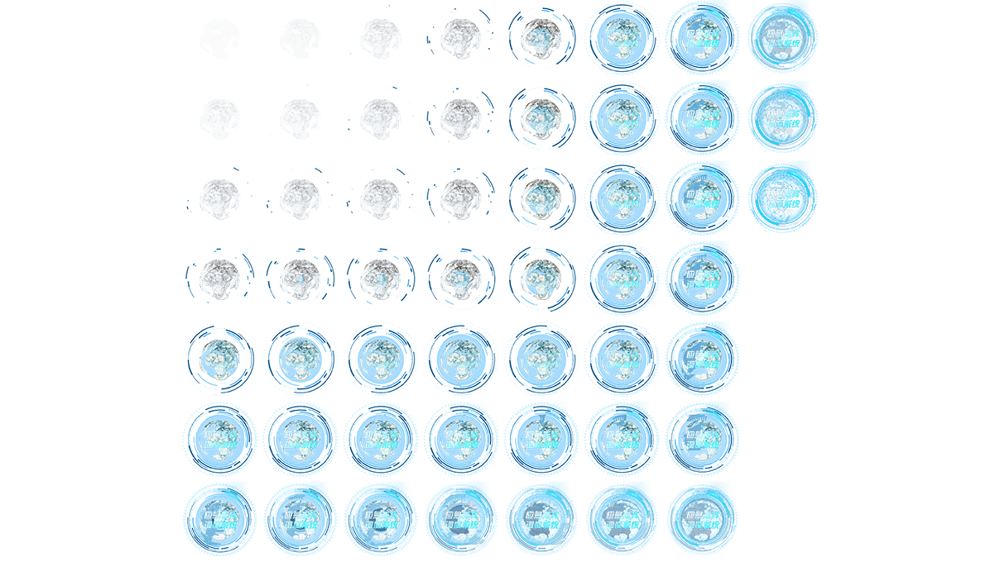
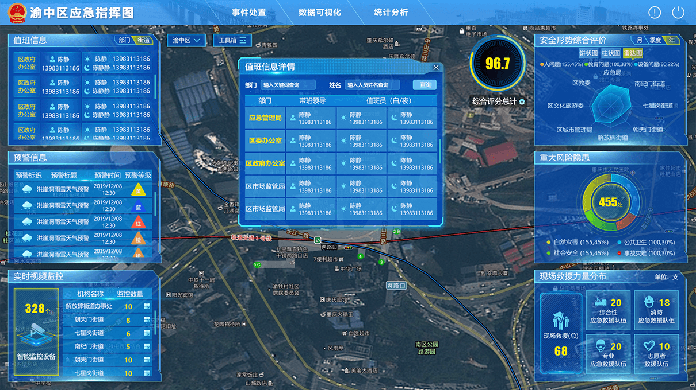
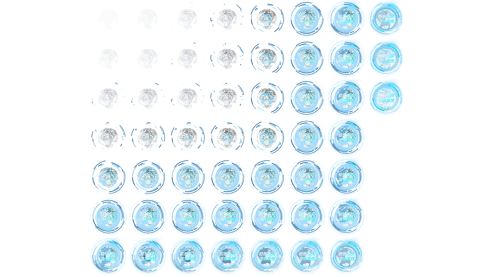
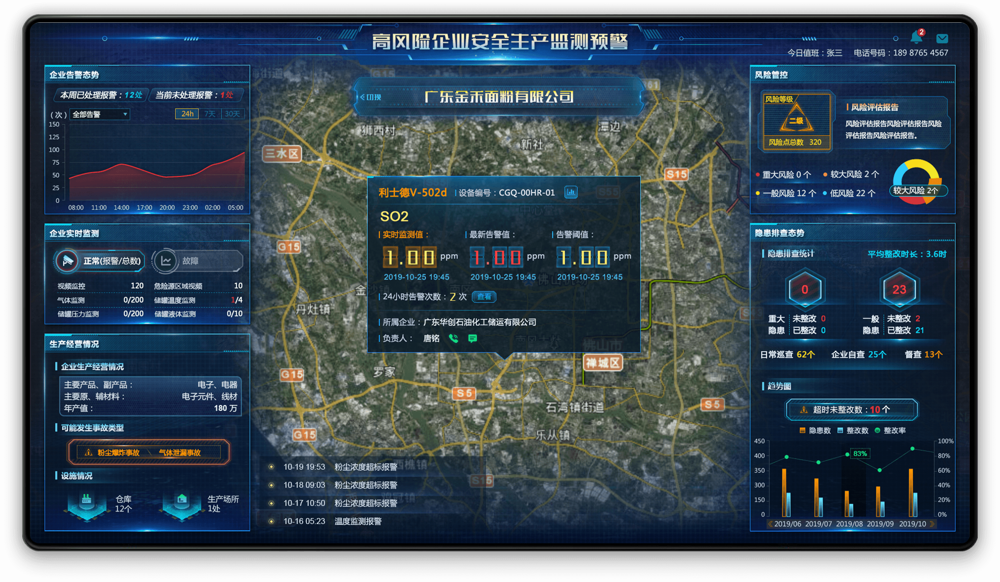

辰安科技源于清华大学、由清华控股的高科技企业，是国际化公共安全产品与服务供应商，专注于为政府和应急相关部门行业、大型企业提供应急管理、城市安全运行监测等软件产品与技术服务。在职期间负责渝中区应急指挥调度系统首页UI设计，GIF动效设；协助团队完成佛山、揭阳等项目中大屏可视化设计及点位图标库的整理工作。
在职期间负责渝中区应急指挥调度系统首页UI设计，GIF动效设；协助团队完成佛山、揭阳等项目中大屏可视化设计及点位图标库的整理工作。
前期根据重庆客户需求，围绕科技感、立体感、渝中区元素等进行设计修改，初期提供5个首页版本，根据反馈定稿如下2种风格进行重点设计。后期配合前端完成中央球形光效动效实现落地。
 



按事前、事发、事中、事后四个阶段，然后细分每个阶段，明确每个阶段的关注内容。
事前：风险监测，风险预警，风险防控，应急资源，应急值守，政务值班。 事发：信息接报，初步研判，应急响应，指挥体系。
事中：信息汇聚，应急决策，专题研判 ，协同会商，辅助决策，协同指挥，组织救援，救援进展，信息发布。
事后：善后处置，恢复重建，事件调查，总结评估，事件归档。
高风险监管涉及煤矿、非煤矿山、石油、危险化学品、烟花爆竹等各个行业，为了更好的辅助安监部门综合掌控安全生产态势，要支持整合各类安全生产监督管理各要素和信息资源，基于地理信息系统，可将城市街道、地标点、建筑物、机动目标、基础设施、视频数据等要素信息进行详细展现，实现管辖区域内企业、人员、车辆、危险源、应急事件的全面监控。
